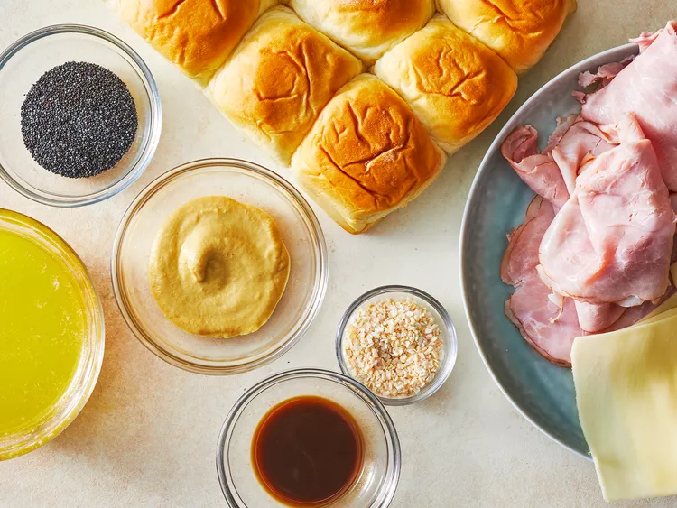

Get all your ingredients together
Preheat the oven to 250 degrees F (175 degrees C). Grease a 9x13-inch baking dish.
Mix butter, Dijon Mustard, Worcestershire sauce, Poppy seeds, and dried onion in a bowl

Separate the tops from the bottoms of the rolls; arrange the bottom pieces in a
layer in the prepared baking dish. Layer about 1/2 of the ham onto the rolls; add
a layer of Swiss cheese and top with remaining ham slices.

Place the tops of the rolls onto the sandwiches. Pour mustard mixture evenly
over the rolls.

Bake in the preheated oven until the rolls are lightly browned and the cheese
has melted, about 20 minutes. Slice into individual rolls through the ham and
cheese layers to serve.